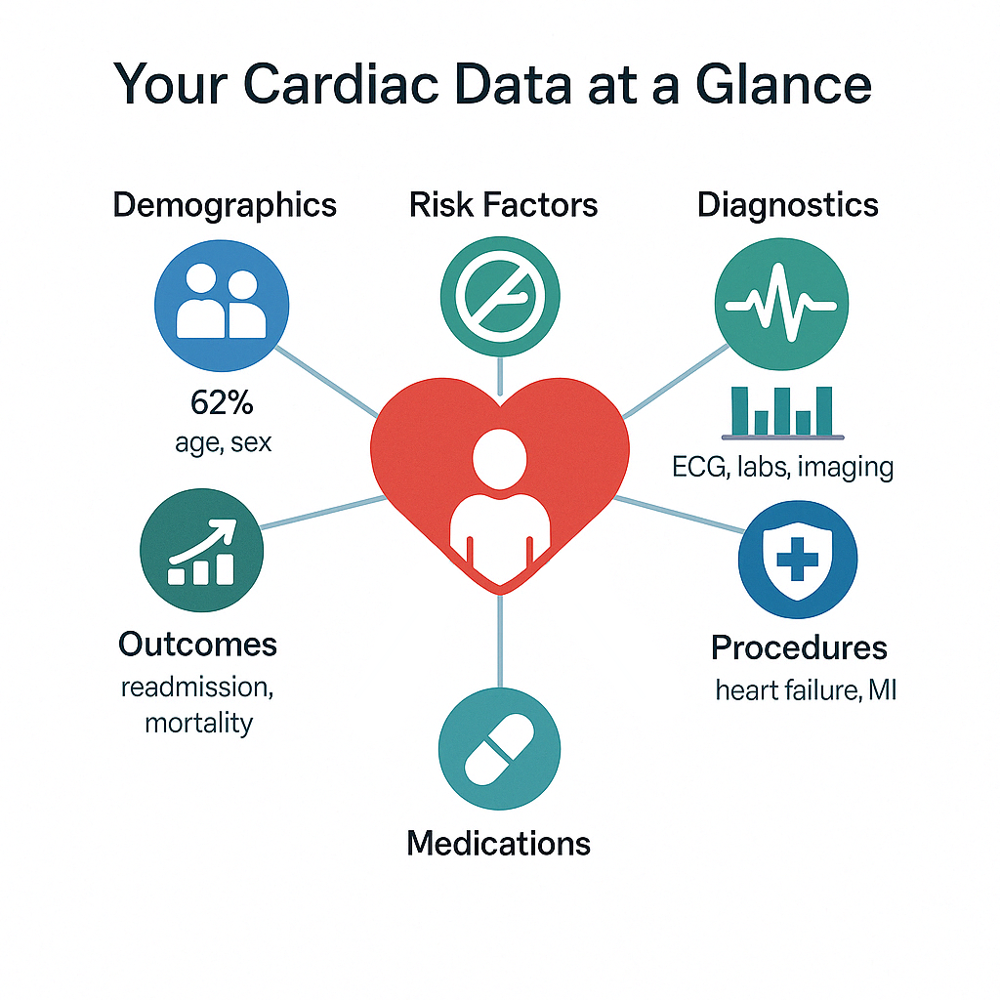

Research for Better Hearts
Our team works with data and science to find new ways to prevent and treat heart disease.

Data Analysis
Using data to improve heart care.
Global Collaboration
Working with experts worldwide.
Our team works with data and science to find new ways to prevent and treat heart disease.
Using data to improve heart care.
Working with experts worldwide.
Since 2000, our Singapore Cardiac Data Bank has collected information on heart treatments to help doctors save lives.
Explore our yearly insights on heart health advancements through the Singapore Cardiac Data Bank.
Reports on catheterization and percutaneous coronary intervention, detailing procedures and outcomes.
Download 2024 ReportInsights into heart failure treatments, patient care, and research progress.
Download 2024 ReportData on electrophysiology, implantable defibrillators, and pacemakers for heart rhythm management.
Download 2024 ReportUpdates on transcatheter aortic valve implantation, improving valve disease treatment.
Download 2024 ReportEuroHeart, an initiative led by the European Society of Cardiology, aims to enhance cardiovascular care through standardized data collection and international collaboration. Launched in 2019, it began with a pilot phase (2019–2021) to test feasibility across multiple countries, followed by a consolidation phase (2022–2024) to expand its network and develop a Data Science Centre for advanced analytics. By fostering harmonized patient data registries, EuroHeart drives quality improvement and supports registry-based clinical trials.
The EuroHeart 2024 Report analyzes data from 63,961 patients across eight countries, including Singapore. Notably, Singapore demonstrates high reperfusion rates for ST-elevation myocardial infarction (STEMI), with 92% of patients receiving timely treatment, surpassing many European counterparts (Page 13).
Download EuroHeart 2024 Report
Focuses on acute coronary syndrome and percutaneous coronary intervention to improve treatment outcomes.
Enhances care through data-driven insights into heart failure management.
Aims to standardize data for better diagnosis and treatment of irregular heart rhythms.
Supports advancements in transcatheter aortic valve implantation for valve disease.